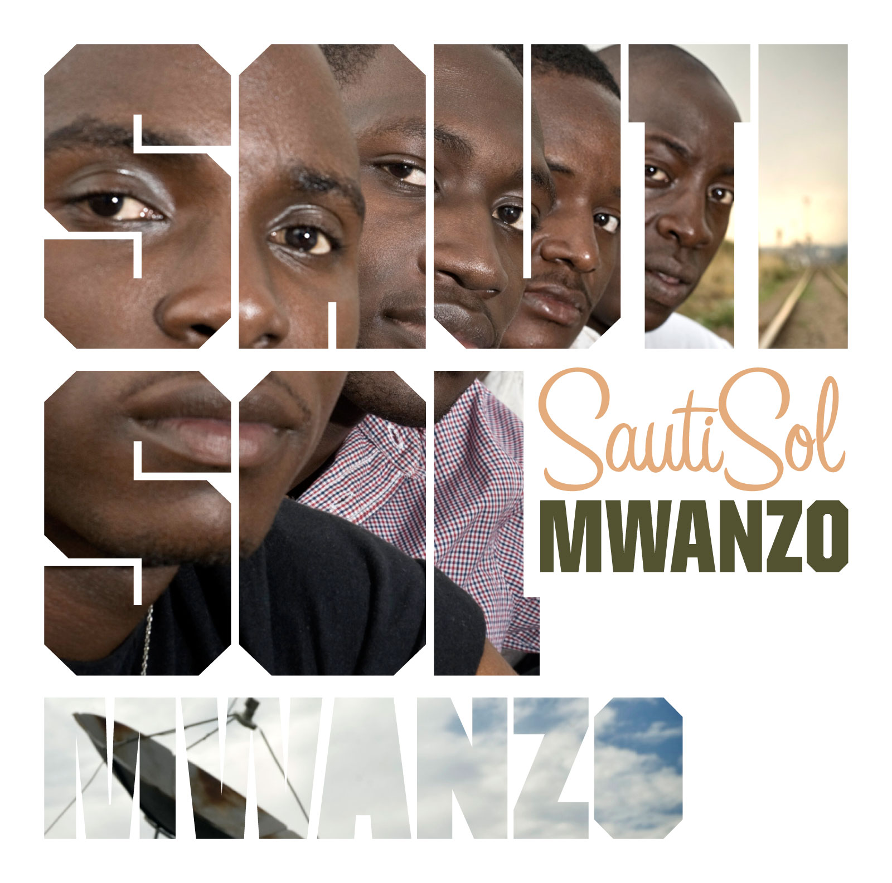
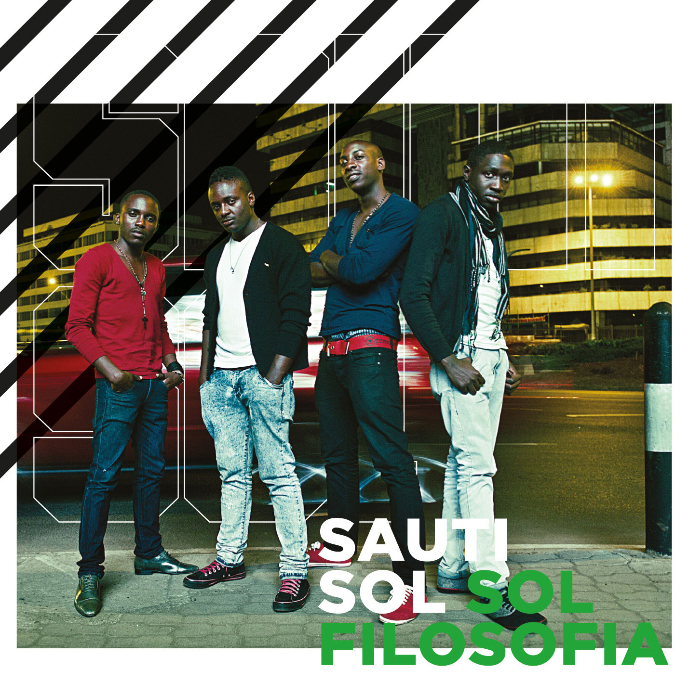
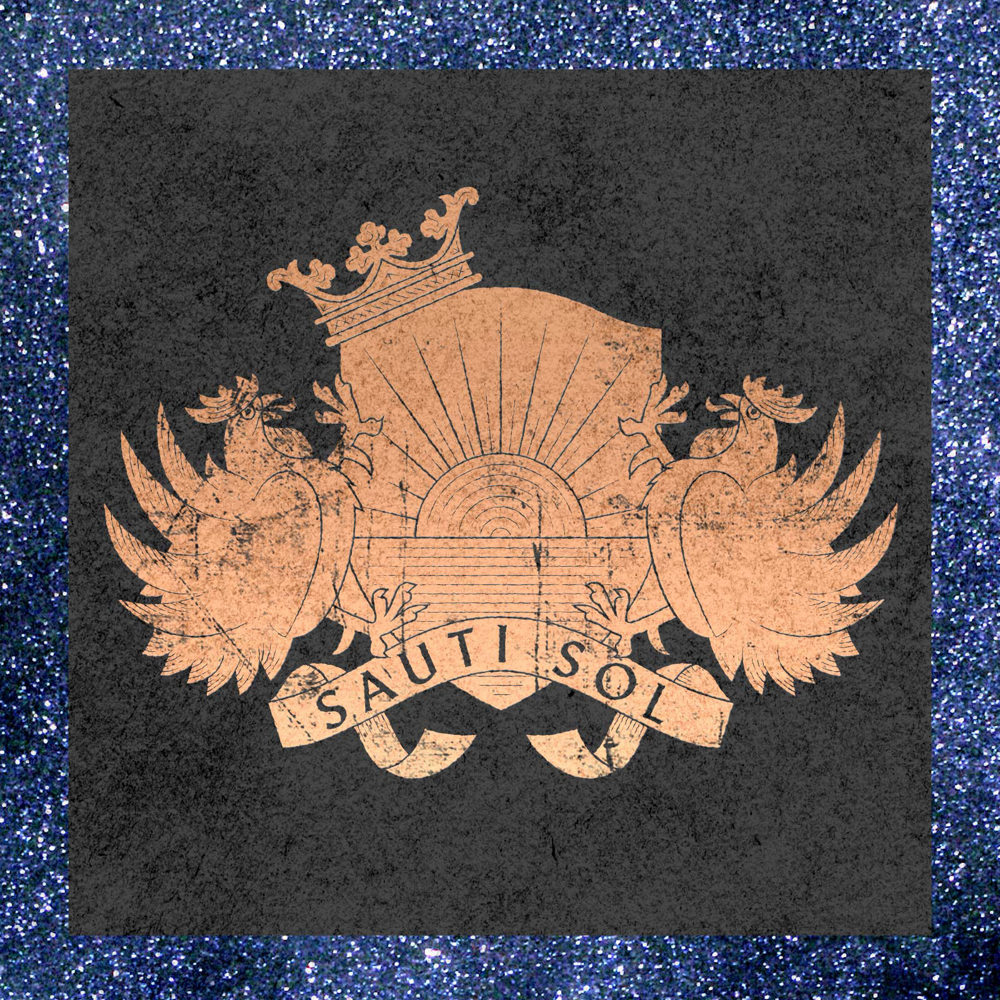
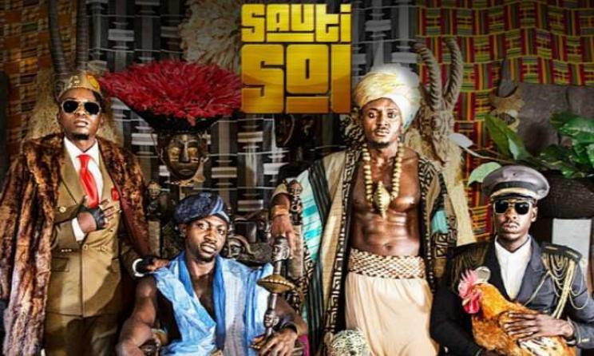
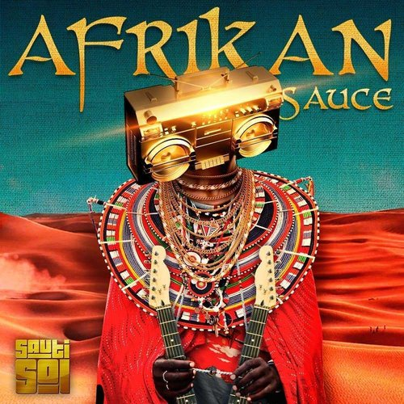
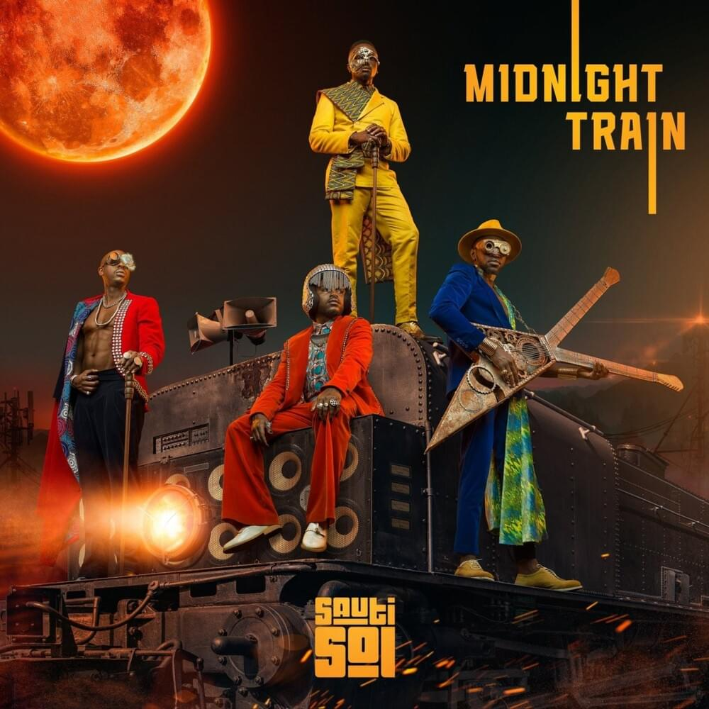

Albums- Song List
Here is a list of Sauti Sol'sALbums, Singles and Collabos.
Get ready for a ride, because this, is going to be an intresting one. If you are a fan, you know that already, if not, weel Get
ready to have your mind changed!!

'Mwanzo'
Sauti Sol’s Mwanzo album is a perfect blend of soul/afro/pop, reminiscent of the great Soul close-harmony bands from the Motown era – but with a unique Kenyan flavor!
This Album features Dela on the song Mama Papa and Stan in song Nairobi.
- Asubuhiicon-
- Lazizi
- Mafunzo ya dunia
- Zosi
- Wera
- Mama Papa Feat Dela
- Blue Uniform
- Interlude Sauit sol
- Subira
- Mapacha
- Mushivala
- Nairobi (feat) Stan
- Asante sana baba

'sol filosofia'
This Album has 12 songs, namely
- Awinja
- Mbinguni
- Malikia
- Coming Home
- Soma Kijana
- Bowana Lelisu
- Nambee
- L.A.D.Y
- Row your boat
- Sofia
- Private Spice
- sol Generation

'Sauti SOl-EP'
Sauti Sol has embarked on an exciting mission–to embrace their artistic versatility and blend their signature harmonies with the futuristic sounds of avant-garde South African rapper/producer Spoek Mathambo, who produced this EP together with Nombolo One. The end result of this much-anticipated collaboration reflects the band’s mission to break (African) musical stereotypes and borders. Produced by Spoek Mathambo & Nombolo One — Mr Money produced by the Dynamixs.
- Mr. Money
- Love or Leave
- Range rover
- jgjjfjfjjf
- Summer Love (feat) Natalie Lukkenaer
- Slow (feat) Spoek Mathambo & Dela
- Disco lover

'Live & Die in Afrika'
Live and Die in Afrika is Sauti Sol’s third studio album. The 15-track album is the group’s first self-produced album touted to have birthed the hit singles: Sura Yako, Isabella, Nishike, Shake Yo Bam Bam and Still the One. The album is a celebration of the African continent coming of age, flaunting the richness in cultural diversity , talent and resources. And now we finally have a generation that fully believes in this continent and her great potential.African diaspora is on a mission to reconnect with their roots, be it through music or other media. There is a willingness to aspire everything and anything African. “In California, they have been dancing to Sura Yako,” (Barack Obama). They sing and dance to the same tune at a wedding in Moshi, Tanzania. There is a willingness to Live and Die in Afrika. These are the united minds of Africa. Minds that will LIVE AND DIE IN AFRIKA!
- Kuliko Jana (A capella version) feat Redfourth Chorus
- Relax
- Nipe Nikupe
- sambo Party
- Kiss Me
- Dollar Dollar
- It's Okay
- Say Yeah
- Nerea Feat Amos And Josh
- Kuliko jana feat Aaron Rimbui
- Live and Die In Afrika
- Isabella
- Shake yo Bam bam
- Sura yako Remix fet Iyanya
- Sura yako
- Nishikilie
- Still the one

'African Sauce'
This Album features Nyashinski, Rapper Khaligraph Jones, Burna Boy, Tiwa savage and Patoranking and has dash songs
- Tujiangalie ft Nyashinski (Official audio)
- Short N Sweet ft Nyashinski (Official audio)
- Rewind ft. Khaligraph Jones (Official audio)
- Afrikan Star ft. Burna Boy (Official Audio)
- Girl Next Door ft. Tiwa Savage (official audio)
- Sauti Sol ft Patoranking – Melanin (Official Audio)
and the latest ablum!

'Midnight Train'
Singing in Swahili, Luhya, Dholuo and English, Sauti Sol pride themselves on storytelling as an East African tradition that permeates music from that region and this is what has kept them relevant with audiences across the world and earned them so many accolades along the way.
Released on May,2020, This Album features soweto gospel, India Arie, Mortimer and Sol Generation.
- Intro
- Midnight Train
- Insecure
- Feel my love
- Brighter Days ft. @Sowetogospel
- Nenda Lote
- Suzanna
Suzanna
- Set me free
- My Everything ft. Indiaarie
- Wake up ft Mortimer
- Sober
- Rhumba Japani
- Disco Matanga
-->
Sauti Sol Members
Now that we have a taste of greatness, let us see who sauti sol is comprised of...
Bien Aime Baraza
Bien-Aime (French for beloved) Baraza is a vocalist, songwriter and guitarist. His style of singing is soulful and his songwriting skills celebrated by many.
Since Sauti Sol’s inception in 2006, Bien-Aime has remained active in the group and part of the creation of Sauti Sol two albums: Mwanzo (2008) and Sol Filosofia (2011). Bien-Aime occasionally writes songs for other artists like Elani, Amos & Josh and Wendy Kimani.
More on Bein----Instagram
Savara Mudigi
Savara Mudigi is a vocalist, percussionist, drummer and producer. His versatility in the band has played an instrumental role during tour and in the establishment on their imprint label: Sauti Sol Entertainment.
More on Savara----Instagram
Willis Chimano
Willis Austin Chimano is a vocalist, keytar and saxophone player. His deep voice and flamboyant style makes him stand out in the group. Before the formation of Sauti Sol, Chimano contested and won in the annual Fête de la Musique music competition at the French Cultural Centre
More on Willis----Instagram
Polycarp Otieno
Polycarp Otieno, akaFancy Fingers is a guitarist and producer. His signature style – guitar riffs blends with the group’s mix of soulful vocal harmonies and drum rhythm. His love for the guitar started early when he attended free guitar lessons at All Saints Cathedral.
More on Polycarp----Instagram
Awards and Nominations
Here are some of the awards and acolades given to Sauti Sol.Awards
- BET Awards
- MTV EMA Awards (Best African Act 2014)
- MTV Africa Music Awards 2014
- Teeniz choice awards (Nominee)
- Kisima Music Awards
- More on the AwardsSee Here
More on sauti sol, chack out their Website
Thank you for reaching the end, Here is a little fun fact- Sauti sol Means "Voices under the sun", pretty neat right.
Well until next time- Hey Isabella, are you gonna come out and dance...
Ciao!